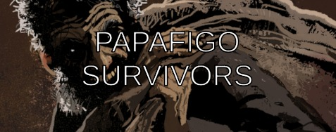

Papafigo Survivor

História
O ano é 1920, na cidade de Andirá, interior nordestino, onde uma seca rotineira é interrompida por notícias de um tesouro escondido, espalhadas por um estranho homem pálido. A cidade entra em frenesi ao encontrar uma misteriosa esfera de bronze. Estranhos acontecimentos começam, e criaturas folclóricas passam a assombrar os cidadãos. Fabiano e Vitória, místicos e caçadores de artefatos, chegam à cidade para investigar e defender a população.
- Data de lançamento: 01 de Janeiro, 2024
- Desenvolvedor: JRocha Studios
- Distribuidora: GBarros Produtora
- Marcadores populares: Ação, Folclore, Sobrevivência